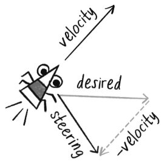
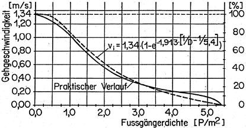
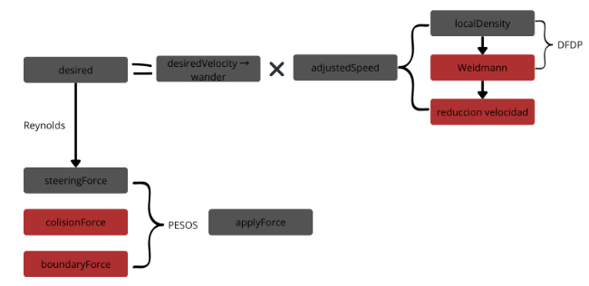
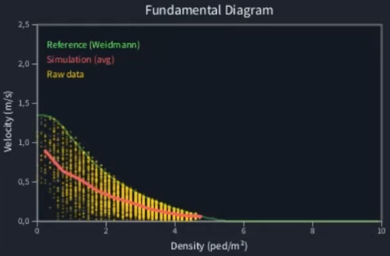
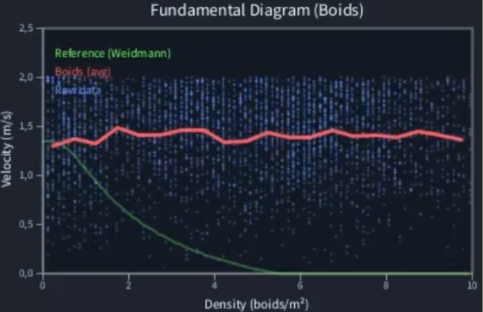

Práctica 1: Agentes Autónomos y Steering Behaviours
Implementación y análisis de comportamientos de navegación autónoma, simulación de Boids y dinámica de peatones
Agentes Autónomos: La Base de la Animación Procedural
En el mundo de la animación procedural y la simulación, los agentes autónomos representan entidades capaces de tomar decisiones independientes sobre su movimiento y comportamiento. A diferencia de una animación predefinida, estos agentes responden dinámicamente a su entorno, creando movimientos orgánicos y realistas sin necesidad de programar cada acción específicamente.
Este concepto, popularizado por Craig Reynolds en 1987 y ampliamente difundido por Daniel Shiffman en su obra The Nature of Code, revolucionó la forma en que simulamos comportamientos complejos en computación gráfica, desde bandadas de pájaros hasta multitudes en videojuegos.
Steering Behaviours: La Mecánica del Movimiento
Los Steering Behaviours (comportamientos de dirección) son el corazón de los agentes autónomos. Reynolds propuso una elegante fórmula que permite a cualquier agente calcular cómo debe ajustar su movimiento para alcanzar un objetivo:
steering = desired - velocity
Esta simple ecuación vectorial es sorprendentemente poderosa. El vector desired representa la dirección ideal hacia donde el agente quiere ir, mientras que velocity es su movimiento actual. La diferencia entre ambos nos da la fuerza de dirección necesaria para reorientar al agente hacia su objetivo.

Figura 1: Representación vectorial de la fórmula de steering
Los 10 Comportamientos Fundamentales
A partir de esta fórmula base, Reynolds identificó una serie de comportamientos que, combinados, pueden generar movimientos complejos y realistas. En esta práctica se implementaron los siguientes comportamientos fundamentales:
Los tres últimos comportamientos (Separation, Alignment y Cohesion) forman el famoso algoritmo Boids, capaz de simular el movimiento de bandadas de aves o bancos de peces con solo tres reglas simples.
Implementación y Demostración
La implementación práctica de estos comportamientos permite observar cómo agentes simples pueden generar movimientos sorprendentemente complejos y naturales. Cada comportamiento se puede activar individualmente para estudiar sus características, o combinarse para crear sistemas más sofisticados.
Video 1: Demostración interactiva de los 10 steering behaviours implementados
La simulación desarrollada en Processing permite interactuar en tiempo real con los agentes, cambiando entre diferentes comportamientos y observando cómo responden a obstáculos, objetivos y otros agentes en el entorno.
Aplicaciones en Boids y Simulación de Peatones
Los steering behaviours son la base tanto para la simulación de Boids (comportamiento de bandadas) como para sistemas más complejos como la simulación de peatones. Mientras que Boids utiliza cohesión, alineación y separación para crear movimientos de grupo coordinados, la simulación de peatones extiende estos conceptos incorporando física de multitudes y validación con datos empíricos.
Ambos sistemas demuestran el poder de los agentes autónomos: reglas simples a nivel individual pueden generar comportamientos emergentes complejos a nivel grupal, sin necesidad de un control centralizado.
Simulación de Peatones en Multitudes
La simulación de peatones utiliza el concepto de agentes autónomos para imitar el comportamiento de personas en multitudes, intentando reproducir su dinámica en un espacio 2D. Esta implementación se basa en cuatro reglas fundamentales que gobiernan el movimiento de cada peatón:
El Diagrama Fundamental de Dinámica de Peatones (DFDP)
El rendimiento de esta simulación se evalúa mediante el Diagrama Fundamental de Dinámica de Peatones (DFDP), comparando los resultados con la fórmula empírica de Ulrich Weidmann.
Weidmann sintetizó una relación velocidad-densidad analizando miles de peatones en estaciones de tren, centros comerciales y otros espacios públicos. Su fórmula describe cómo los peatones reducen su velocidad cuando hay más personas a su alrededor:
v = v₀ × (1 - exp(-γ × (1/ρ - 1/ρₘₐₓ)))
Donde v₀ = 1.34 m/s representa la velocidad libre de caminata, γ = 1.913 es el parámetro de ajuste, y ρₘₐₓ = 5.4 ped/m² es la densidad máxima (hombro con hombro). La curva resultante es típicamente exponencial decreciente.

Figura 2: Diagrama Fundamental de Dinámica de Peatones según Weidmann
Arquitectura del Sistema
La implementación combina los steering behaviours de Reynolds con el modelo de densidad de Weidmann. El sistema calcula la densidad local, ajusta la velocidad deseada según el DFDP, y aplica fuerzas ponderadas para steering, colisiones y límites.

Figura 3: Arquitectura del sistema - Integración de Reynolds y Weidmann
Demostración de la Simulación
Video 2: Simulación de peatones con validación del DFDP
Boids: Simulación de Bandadas
Los Boids son agentes autónomos que simulan el comportamiento de bandadas de aves o bancos de peces. Desarrollados por Craig Reynolds en 1987, demuestran cómo comportamientos complejos emergen de solo tres reglas simples:
A diferencia de los peatones, los Boids priorizan el movimiento coordinado del grupo. Sin embargo, para validar científicamente la simulación, también se implementó el DFDP para comparar su comportamiento con el modelo de Weidmann y observar las diferencias fundamentales.
Demostración de la Simulación
Video 3: Simulación de Boids con análisis del DFDP
Comparación: Peatones vs Boids
La comparación cuantitativa entre ambas simulaciones revela diferencias fundamentales en su comportamiento. Mientras que la simulación de peatones reproduce la curva exponencial decreciente del diagrama fundamental de Weidmann, los Boids muestran un patrón diferente debido a su naturaleza de movimiento en bandada.
Esta comparación ilustra por qué es crucial elegir el modelo apropiado según la aplicación: Boids es ideal para animación de grupos coordinados, mientras que la simulación de peatones es necesaria para estudios de seguridad, evacuación y planificación urbana.
Análisis Comparativo de Diagramas Fundamentales


Figura 4: Comparación de diagramas fundamentales entre la simulación de peatones (izquierda) y Boids (derecha), mostrando las diferencias en la relación velocidad-densidad
Referencias principales:
• Reynolds, C. W. (1987). "Flocks, Herds, and Schools: A Distributed Behavioral Model"
• Reynolds, C. W. (1999). "Steering Behaviors for Autonomous Characters"
• Shiffman, D. "The Nature of Code" - Capítulo 6: Autonomous Agents
• Weidmann, U. (1993). "Transporttechnik der Fussgänger" - ETH Zürich